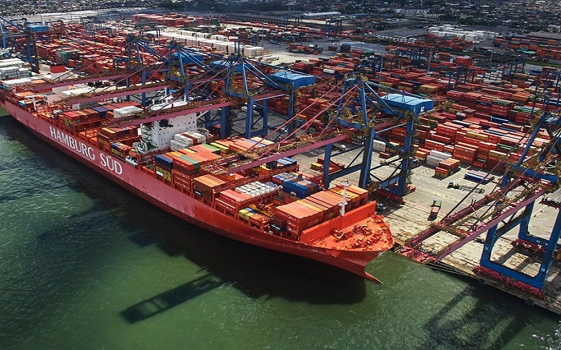
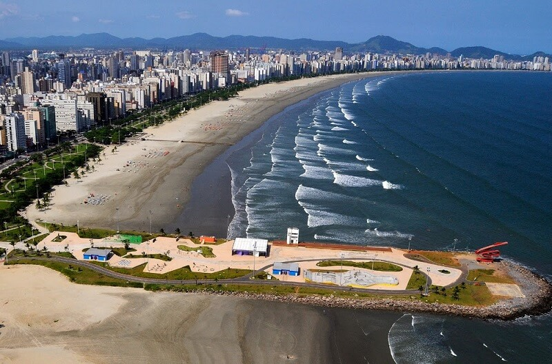

Santos é um município portuário sede da Região Metropolitana da Baixada Santista, localizado no litoral do estado de São Paulo, no Brasil. Com a maior participação econômica da citada região, abriga o maior porto da América Latina, o principal responsável pela dinâmica econômica da cidade ao lado do turismo, da pesca e do comércio, ocupando a 5ª colocação entre as não capitais mais importantes para a economia brasileira e 10ª colocada segundo a qualidade de vida. A cidade é sede do poder executivo paulista todo dia 13 de junho (capital simbólica de São Paulo) e também é sede de diversas instituições de ensino superior.
Maior cidade do litoral paulista, o principal cartão-postal do município são os 7 km de praia. O Livro dos Recordes situa os jardins da orla de Santos como formadores do maior jardim frontal de praia em extensão do mundo. A preservação e o cuidado com a flora do ambiente praiano santista, permeado de palmeiras e amendoeiras, são resultados de um trabalho em conjunto dos departamentos de meio ambiente da região, muitas vezes ligados a universidades ou a instituições científicas.
Porto de Santos
O Porto de Santos é um porto estuarino, localizado nos municípios de Santos, Guarujá e Cubatão, no estado de São Paulo. É o principal porto brasileiro, e o maior complexo portuário da América Latina. Possui uma grande variedade de terminais de carga para diversos produtos, que realizam a movimentação de granéis sólidos (principalmente de origem vegetal), líquidos, contêineres, carga geral e passageiros.
A área de influência econômica do porto concentra aproximadamente 67% do produto interno bruto (PIB) do país e abrange principalmente os estados de São Paulo, Minas Gerais, Goiás, Mato Grosso e Mato Grosso do Sul. Aproximadamente 60% do comércio internacional do estado de São Paulo (em valores) são embarcados ou desembarcados através do Porto de Santos.
O Complexo Portuário de Santos responde historicamente por mais de 25%, ou um quarto, da movimentação da balança comercial brasileira, e é o maior porto exportador de açúcar, suco de laranja e café em grãos do mundo[10]. Outras cargas de importância são a soja, cargas conteinerizadas, milho, trigo, sal, papel, automóveis, álcool e outros granéis líquidos.
Em 2016, foi considerado o 39º maior porto do mundo por movimentação de contêineres, e 35º por tonelagem, segundo ranking da AAPA — Associação Americana de Autoridades Portuárias, sendo o mais movimentado da América Latina.
Turismo em Santos

Entre os principais pontos turísticos de Santos além de suas praias, podemos citar os Jardins da orla de Santos que é o maior jardim frontal de praia em extensão do mundo.O Aquário de Santos (antigo Aquário Municipal de Santos), inaugurado em 1945 pelo então Presidente da República Getúlio Vargas e ampliado em 2006, é o segundo parque público mais visitado do estado e atrai turistas do mundo inteiro.
Outros lugares de interesse são o Museu do Café Brasileiro, o Orquidário Municipal, o Jardim Botânico Chico Mendes, o Teatro Coliseu Santista, o Panteão dos Andradas, o Monte Serrat, e a Estação do Valongo. A Laje de Santos é um lugar muito procurado por mergulhadores. Entre as igrejas de interesse temos a Catedral de Santos, a Igreja Santo Antônio do Embaré, e a Igreja do Valongo.
Santos é um dos 15 municípios paulistas considerados estâncias balneárias pelo estado de São Paulo, por cumprirem determinados pré-requisitos definidos por Lei Estadual. Tal status garante a esses municípios uma verba maior por parte do estado para a promoção do turismo regional. Também, o município adquire o direito de agregar junto a seu nome o título de Estância Balneária, termo pelo qual passa a ser designado tanto pelo expediente municipal oficial quanto pelas referências estaduais.
Para ver mais sobre o turismo em Santos, clique aqui.Praias
As Praias de Santos se estendem ao longo de 7 km, que formam na realidade uma única praia, com uma única enseada, diferente das outras cidades da Baixada Santista. Os canais de Santos que delimitam alguns bairros de Santos, também acabam dividindo a praia em 7 praias diferentes, que recebem os nomes dos bairros da cidade.
As praias da cidade de Santos tem o maior jardim de orla do mundo, e um dos mais bonitos. Outro grande ponto positivo da cidade, é que em todas praias se encontram vários chuveirinhos.
- Praia do José Menino: Da divisa de São Vicente até Canal 1
- Praia da Pompéia:Do Canal 1 ao Canal 2
- Praia do Gonzaga: Do Canal 2 ao Canal 3
- Praia do Boqueirão: Do Canal 3 ao Canal 4
- Praia do Embaré: Do Canal 4 ao Canal 5
- Praia da Aparecida: Do Canal 5 ao Canal 6
- Ponta da Praia: Do Canal 6 ao Canal 7